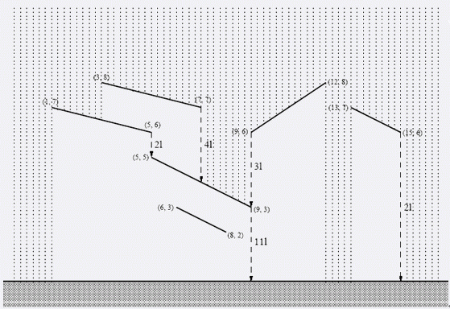

Notice:注册本OJ方式请见https://www.lydsy.com/JudgeOnline/wttl/thread.php?tid=5671
Problem 1451. -- November Rain1451: November Rain
Time Limit: 1 Sec Memory Limit: 64 MB
Submit: 35 Solved: 11
[Submit][Status][Discuss]Description
某个房子的屋顶如下图所示…。

在单位时间单位长度降雨量为1单位的时候，每条“屋顶”，都有一个单位时间落下的水量（就是单位时间从屋顶较低的那一侧落下去的水量），现在希望对于每个屋顶，算出它的落水量。
Input
第一行一个数N（1<=N<=20000），表示屋顶的个数。
接来下N行，每行4个整数，X0,Y0,X1,Y1,描述一个屋顶（坐标范围[-1000000,1000000]，保证屋顶一定是斜的，屋顶不会有任何公共点）。
Output
一共N行，每行一个数，表示第I个屋顶的落水量。
Sample Input
6
13 7 15 6
3 8 7 7
1 7 5 6
5 5 9 3
6 3 8 2
9 6 12 8
Sample Output
2
4
2
11
0
3
HINT
Source
[Submit][Status][Discuss]
HOME
Back